Workflow for Nayak et al. (2022)¶
Hari Sankar Nayak, Cornell University
João Vasco Silva, CIMMYT-Zimbabwe
Introduction¶
Interest in the application of machine learning in agronomic science is increasing with the growing availability of geo-referenced farmer field data and spatially explicit environmental data in a diversity of cropping systems. Different types of machine learning methods can be identified based on their interpretability and level of complexity: (i) regression-based methods (e.g., linear, ridge, and lasso regression), (ii) single tree- or multiple tree-based methods (e.g., classification and regression trees, gradient boosting, extreme gradient boosting, and random forest), and (iii) decision boundary-based support vector regression, amongst others.
Regression-based methods are parametric, and their coefficients are obtained through ordinary least-squares. Tree-based methods such as classification and regression tree, random forest, and gradient boosting rely on decision trees, and a series of if-then rules to arrive at a particular prediction or classification. Distance-based methods, like K-nearest mean, find the K-nearest neighbors in the feature space and provide predictions based on those K data point’s outcomes. Finally, decision boundary-based methods create a decision boundary with data projected in a higher dimension (suppose there are three variables, then their values will be projected in a 3-dimensional space) to derive a particular prediction. Regression-based methods are less complex and have easier and direct interpretation compared to tree-based or distance and decision boundary-based methods.
{kind=link}
Some of the methods referred above have been used in agronomy research over the recent years. One such example comparing different machine learning models can found in Nayak et al. (2022), which provide an application for wheat crops in Northwest India (Punjab and Haryana). We will reproduce the key steps proposed in the study in this workflow (see figure above) namely (1) comparison of different models, (2) recursive feature elimination, (3) tuning of model hyper-parameters, (4) assessing model performance, and (5) fit a final model and interpreted it using different techniques. Estimation of Shapely values, which will provide a useful means to decompose yield gaps in the future, is provided at the end.
Load required R packages¶
First, we need to load the R packages needed to run this workflow.
# install packages
install.packages('randomForest', repos="http://cran.us.r-project.org", dependencies=T, quiet=T)
## package 'randomForest' successfully unpacked and MD5 sums checked
install.packages('caret', repos="http://cran.us.r-project.org", dependencies=T, quiet=T)
## package 'caret' successfully unpacked and MD5 sums checked
install.packages('caretEnsemble', repos="http://cran.us.r-project.org", dependencies=T, quiet=T)
## package 'caretEnsemble' successfully unpacked and MD5 sums checked
install.packages('iml', repos="http://cran.us.r-project.org", dependencies=T, quiet=T)
## package 'iml' successfully unpacked and MD5 sums checked
install.packages('tidyverse', repos="http://cran.us.r-project.org", dependencies=T, quiet=T)
## package 'tidyverse' successfully unpacked and MD5 sums checked
install.packages('dplyr', repos="http://cran.us.r-project.org", dependencies=T, quiet=T)
## Warning: package 'dplyr' is in use and will not be installed
#
# install packages
packages <- c("elasticnet", "partykit", "rpart", "rpart.plot")
installed_packages <- packages %in% rownames(installed.packages())
if(any(installed_packages == FALSE)){
install.packages(packages[!installed_packages], repos="http://cran.us.r-project.org", quiet=T)}
#
# load packages
packages <- c("elasticnet", "partykit", "rpart", "rpart.plot", "randomForest", "caret", "caretEnsemble", "iml", "tidyverse", "dplyr")
invisible(lapply(packages, function(x) suppressMessages(require(x, character.only=T, quietly=T, warn.conflicts=F))))
Farmer field data¶
The chunk of code below loads the data that we will use for this workflow. The data used to illustrate how much learning can be used for yield gap decomposition refers to wheat crops in Northwest India (Punjab and Haryana). Further details about the data set can be found in Nayak et al. (2022).
# read .csv file with data
file <- 'https://raw.githubusercontent.com/jvasco323/eia-yg-training-ppt/master/pooled_data_wheat_phd_fcr.csv'
pooled_data <- read.csv(url(file), header=TRUE)
#
# list variables of interest for visualization
str(pooled_data)
## 'data.frame': 6139 obs. of 24 variables:
## $ X : int 1 2 3 4 5 6 7 8 9 10 ...
## $ cc_yield : num 3475 5086 5086 5548 6275 ...
## $ total_nitrogen_ha : num 182 182 178 178 126 ...
## $ weed_severity : chr "Low" "No" "No" "Medium" ...
## $ insect_severity : chr "None" "Medium" "Medium" "Medium" ...
## $ disease_severity : chr "None" "Medium" "Medium" "Medium" ...
## $ rice_till : chr "<=4" "6" "<=4" "<=4" ...
## $ till_int : chr "ZT/MT" "ZT/MT" "ZT/MT" "ZT/MT" ...
## $ irri_num : chr "<=2" "3" "<=2" "<=2" ...
## $ variety_nameIn : chr "WH 1105" "HD 2967" "Other" "HD 2967" ...
## $ residue : chr "80_100" "80_100" "80_100" "80_100" ...
## $ duration : int 177 176 167 163 155 160 174 167 164 166 ...
## $ seed_amount : int 50 40 50 40 40 40 40 40 40 40 ...
## $ tot_p2o5_ha : num 69 69 57.5 57.5 57.5 57.5 57.5 57.5 57.5 57.5 ...
## $ lodging_cat : chr "30" "No" "No" "No" ...
## $ date_sowin : int 297 300 311 308 315 312 305 307 305 296 ...
## $ dat_urea1 : int 28 30 30 28 25 25 25 25 25 20 ...
## $ dat_urea2 : int 45 45 45 39 35 35 35 35 35 35 ...
## $ fallow_days : num 13 4 6 35 25 35 35 35 25 0.1 ...
## $ Max_temperature : num 22.1 22.1 22.3 23.2 22.3 ...
## $ Min_temperature : num 10.6 10.6 10.4 11.6 10.4 ...
## $ Precipitation_Accumulated: num 236 243 221 207 270 ...
## $ radiation : num 74.8 75.2 76.9 79.8 78.6 ...
## $ Texture : chr "loam" "clay_loam" "loam" "loam" ...
We select a random sample of 30% of the total data, to ease computation power. We need to use the ‘set.seed()’ function to make sure the random sample is the same every time we re-run the code.
set.seed(1234)
pooled_data1 <- pooled_data %>% sample_frac(size = 0.3)
We need to some data manipulation, particularly re-levelling categorical variables, prior to model fitting. This is done with the chunk of code below.
# leveling categorical variables
pooled_data1$lodging_cat <- as.factor(pooled_data1$lodging_cat)
pooled_data1$lodging_cat <- relevel(pooled_data1$lodging_cat, ref="No")
pooled_data1$irri_num <- as.factor(pooled_data1$irri_num)
pooled_data1$irri_num <- relevel(pooled_data1$irri_num, ref="<=2")
pooled_data1$rice_till <- as.factor(pooled_data1$rice_till)
pooled_data1$rice_till <- relevel(pooled_data1$rice_till, ref="<=4")
pooled_data1$residue <- as.factor(pooled_data1$residue)
pooled_data1$residue <- relevel(pooled_data1$residue, ref="No")
pooled_data1$till_int <- as.factor(pooled_data1$till_int)
pooled_data1$till_int <- relevel(pooled_data1$till_int, ref="Intensive")
pooled_data1$Texture <- as.factor(pooled_data1$Texture)
pooled_data1$Texture <- relevel(pooled_data1$Texture, ref="clay")
pooled_data1$insect_severity <- as.factor(pooled_data1$insect_severity)
pooled_data1$insect_severity <- relevel(pooled_data1$insect_severity, ref="None")
pooled_data1$disease_severity <- as.factor(pooled_data1$disease_severity)
pooled_data1$disease_severity <- relevel(pooled_data1$disease_severity, ref="None")
pooled_data1$weed_severity <- as.factor(pooled_data1$weed_severity)
pooled_data1$weed_severity <- relevel(pooled_data1$weed_severity, ref="No")
pooled_data1$X = NULL
Step 1: Model comparison¶
In this section, we use the functions of the caret R package to compare the performance of different machine learning models. First, the data are split into training and test set. THis is done with createDataPartition() function, which ensure the same yield distribution between both train and test data sets. Further, the nearZeroVar() function is used check whether categorical variables have a balanced number of observations between per category. None of the variables considered here has near zero variance. So, we can proceed with all of them for further analysis. That not being the case, we need to exclude variables with unbalanced number of observations for different categories.
For example, if 98% of the fields reported residue incorporation and only 2% do not, then that variable has to be excluded from further analysis due to lack variability in the data to check the effects of residue management with such data distribution.
# partitioning data into train and test set
set.seed(458)
train_seq <- createDataPartition(pooled_data1$cc_yield, p=0.7, list=F)
train_data <- pooled_data1[train_seq,]
test_data <- pooled_data1[-train_seq,]
#
# check near zero variance predictor
(nzv <- nearZeroVar(train_data, saveMetrics=T))
## freqRatio percentUnique zeroVar nzv
## cc_yield 1.656250 33.8497289 FALSE FALSE
## total_nitrogen_ha 2.496296 9.3725794 FALSE FALSE
## weed_severity 1.992405 0.3098373 FALSE FALSE
## insect_severity 1.150562 0.2323780 FALSE FALSE
## disease_severity 1.036613 0.2323780 FALSE FALSE
## rice_till 1.143284 0.3098373 FALSE FALSE
## till_int 1.225728 0.2323780 FALSE FALSE
## irri_num 1.389016 0.3098373 FALSE FALSE
## variety_nameIn 1.388325 0.8520527 FALSE FALSE
## residue 1.293532 0.3098373 FALSE FALSE
## duration 1.030303 3.7180480 FALSE FALSE
## seed_amount 1.157773 1.3942680 FALSE FALSE
## tot_p2o5_ha 6.539683 1.6266460 FALSE FALSE
## lodging_cat 4.302857 0.3872967 FALSE FALSE
## date_sowin 1.031579 3.3307514 FALSE FALSE
## dat_urea1 1.639456 1.6266460 FALSE FALSE
## dat_urea2 1.138158 2.0139427 FALSE FALSE
## fallow_days 1.346154 2.7885360 FALSE FALSE
## Max_temperature 1.166667 84.0433772 FALSE FALSE
## Min_temperature 1.166667 84.3532146 FALSE FALSE
## Precipitation_Accumulated 1.789474 48.7219210 FALSE FALSE
## radiation 1.166667 84.3532146 FALSE FALSE
## Texture 5.987805 0.2323780 FALSE FALSE
The chunk of code below implements fits four different machine learning models namely random forest (ranger), classification and regression trees (rpart), lasso regressions (lasso), and multiple linear regressions (lm) to the training data set (see algorithmList). This is done with caretList() function. This done considering a five-fold cross-validation scheme with random sampling repeated once, as specified with the trainControl() function.
You might get some warnings here, just ignore them for now. Moreover, the model selection provides a summary of the performance of each models based on the mean absolute error (MAE), root mean square error (RMSE), and r2 (Rsquared). The table shows the mean and variability of each statistical indicator.
# five-fold cross-validation repeated once with random sampling
control <- trainControl(method="repeatedcv", number=5, repeats=1, search="random")
algorithmList <- c("ranger", "rpart", "lasso", "lm")
#
# fit the models
models <- caretList(cc_yield ~ ., data=train_data, trControl=control, methodList=algorithmList)
## Warning in trControlCheck(x = trControl, y = target): trControl$savePredictions
## not 'all' or 'final'. Setting to 'final' so we can ensemble the models.
## Warning in trControlCheck(x = trControl, y = target): indexes not defined in
## trControl. Attempting to set them ourselves, so each model in the ensemble
## will have the same resampling indexes.
#
# check model performance and select the final model
model_selection <- summary(resamples(models))
model_selection
##
## Call:
## summary.resamples(object = resamples(models))
##
## Models: ranger, rpart, lasso, lm
## Number of resamples: 5
##
## MAE
## Min. 1st Qu. Median Mean 3rd Qu. Max. NA's
## ranger 325.6882 329.0564 340.2513 336.8692 341.9962 347.3539 0
## rpart 385.9707 396.8829 404.5381 403.9548 411.9435 420.4389 0
## lasso 362.7796 367.1223 381.6161 381.3467 390.0721 405.1432 0
## lm 360.0128 371.1747 373.3334 374.2182 376.1845 390.3857 0
##
## RMSE
## Min. 1st Qu. Median Mean 3rd Qu. Max. NA's
## ranger 423.8816 441.4632 454.4603 456.8959 471.2636 493.4108 0
## rpart 515.0038 524.3552 544.7379 549.7969 578.7274 586.1599 0
## lasso 473.3300 490.0915 504.2732 501.6990 518.9239 521.8766 0
## lm 474.2202 484.3892 500.1749 495.1089 507.5487 509.2114 0
##
## Rsquared
## Min. 1st Qu. Median Mean 3rd Qu. Max. NA's
## ranger 0.3361684 0.4138663 0.4409527 0.4484798 0.5173389 0.5340726 0
## rpart 0.1914681 0.2335654 0.2682762 0.2709623 0.3302742 0.3312278 0
## lasso 0.2724807 0.3220751 0.3279141 0.3347506 0.3607098 0.3905734 0
## lm 0.2845403 0.3340153 0.3650927 0.3511480 0.3850839 0.3870076 0
Step 2: Recursive feature elimination¶
Not all variables (also known in machine learning as features) are equally important in a given machine learning model. Most often, most variability in the output variable is described by few features only. The benefits of a reduced feature space include (1) improved, targeted, data collection in subsequent field activities and (2) the model is fitted without variables that don’t add additional information/explanatory power. Recursive feature elimination is a technique to reduce the number of features prior to model fitting. To do so, a given functional form is needed to establish the relationship between input and output variables. The functional form assumed in this example is random forest.
# define five-fold cross-validation scheme
control_feature <- rfeControl(functions=rfFuncs, method="cv", number=5)
#
# recursive feature elimination; 'sizes' stands for the number of variables
feature_selection <- rfe(train_data[,2:23], train_data[,1], sizes=c(1:23), rfeControl=control_feature)
#
# rmse vs. number of variables (ordered from very to not important)
plot(feature_selection)
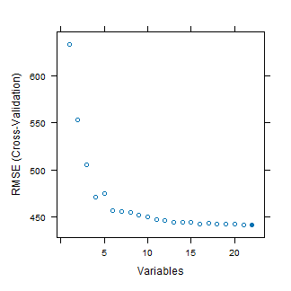
#
# r2 vs. number of variables (ordered from very to not important)
# plot(feature_selection$results$Rsquared)
The final number of variables to keep in the model is a subjective user decision. From the plot above, including more than variables results in small changes in the root mean square error of the training data set. So, we can pick any number of variables greater than 10. For this example, we pick the 10 most important variables only.
# list all variables
list_of_var <- feature_selection$optVariables
list_of_var <- append("cc_yield", list_of_var)
#
# select 10 most important variables only
train_data <- train_data[,list_of_var[1:11]]
test_data <- test_data[,list_of_var[1:11]]
Step 3: Tuning hyper-parameters¶
The structure of underlying regression trees can lead to the formulation of different random forest models, which validity and performance can be evaluated as explained in this section. Different random forest models can be created through manipulation of so-called hyper-parameters and the hyper-parameters leading to best model performance can be identified using a grid search approach. Three hyper-parameters can be tuned in random forest: ntree (number of trees build), nodesize (number of observations allowed per terminal node controlling the depth of each tree), and mtry (the number of variables randomly sampled as candidates at each split).
The chunk of code below creates the combinations of parameters for which the model performance will be assessed using a grid search approach. Next, it defines the cross-validation scheme for the hyper-parameter tuning and fits a random forest model for each combination using the train() function.
# parameter combinations for grid search approach
ntrees <- c(100, 500)
nodesize <- seq(10,130, 15)
tuneGrid <- expand.grid(.mtry = c(4,6,8,10,12))
params <- expand.grid(ntrees = ntrees, nodesize = nodesize)
#
# cross-validation scheme for the hyper-parameter tuning
control <- trainControl(method="repeatedcv", number=5, repeats=1, search='grid', verboseIter=F)
#
# create vector to store the 18 combinations of nodesize x ntree, at the best mtry value
all_model <- vector("list", nrow(params))
#
# fit the model for different combinations of hyper-parameters
for(i in 1:nrow(params)){
nodesize <- params[i,2]
ntree <- params[i,1]
set.seed(65)
rf_model <- train(cc_yield ~ ., # y = f(x)
data=train_data, # select training data
method="rf", # choose random forest
tuneGrid=tuneGrid, # evaluate mtry for each combination
trControl=control, # set cross-validation scheme
ntree=ntree, # set number of trees
nodesize=nodesize) # set node size
all_model[[i]] <- rf_model # store model outputs
}
#
# set dataframe names
names(all_model) <- paste("ntrees:", params$ntrees, "nodesize:", params$nodesize)
Step 4: Model performance¶
After fitting random forest models with different structure with the chunk of code above, we can now evaluate the performance of those models based on the cross-validated and training R2. This is necessary to select the “best” combination of hyper-parameters to be used in the final model from which interpretation will be done.
There is no rule of thumb regarding which model (i.e., combination of hyper-parameters) to choose, which thus remains a subjective user decision. For instance, if the model is intended for explanatory purposes, then the hyper-parameter combination with highest training R2 can be selected. Conversely, if the model is intended for predictive purposes, then the hyper-parameter combination with highest cross-validated, out-of-bag, R2 can be selected. Finally, if the model interpretation is the final goal, then the hyper-parameter combination with most similar training and cross-validated R2 can be selected. Such decision can be made based on the plot below.
Please note there is a rule of thumb to tune the mtry value in random forest. That is: the best mtry values lies between square root of the number of variables or the number of variables divided by three.
# extract cross-validated r2 (proxy of test set r2)
rsquared <- sapply(all_model, function(object) object$results["Rsquared"])
names(rsquared) <- paste("ntrees:", params$ntrees, "nodesize:", params$nodesize)
rsq_df = data.frame(matrix(unlist(rsquared), nrow=length(rsquared), byrow=T))
rsq_df$nodesize = paste(params$nodesize)
rsq_df$ntree = paste(params$ntrees)
rsq_df$mean_r2 = rowMeans(rsq_df[1:5])
#
# extract the training r2 (optional)
store_validation <- vector("list", nrow(params))
for(i in 1:nrow(params)){
store_validation[[i]] <- list(predict(all_model[[i]],
newdata=all_model[[i]][["trainingData"]][2:11]),
all_model[[i]][["trainingData"]]$.outcome)
}
rsq_train = vector("list", nrow(params))
for(i in 1:nrow(params)){
rsq_train[[i]] <- cor(store_validation[[i]][[1]], store_validation[[i]][[2]])^2
}
rsq_train_df = data.frame(matrix(unlist(rsq_train)))
rsq_train_df$nodesize = paste(params$nodesize)
rsq_train_df$ntree = paste(params$ntrees)
names(rsq_train_df)[1] <- 'r2_train'
#
# merge training and cross-validated r2 into single data frame
r2 <- merge(rsq_train_df, rsq_df, by=c('nodesize', 'ntree'))
r2 <- r2[order(r2$r2_train, decreasing=T),]
r2$row <- seq(1,18,1)
plot(r2$row, r2$r2_train, col='red', ylim=c(0,1))
points(r2$row, r2$mean_r2, col='blue')
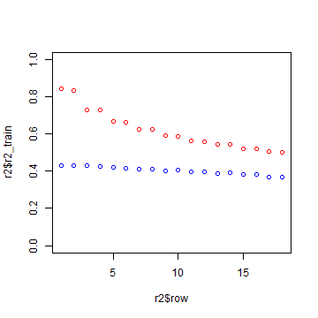
Step 5: Final random forest¶
Once the combination of hyper-parameters to be used is defined, then the model can be fitted considering those hyper-parameter values. The chunk of code below defines the hyper-parameters to be used in the final random forest model and fits the respective model to the training data. This model will be further interpreted with the iml R package in the next sections.
# set final hyper-parameter values
ntrees_model <- c(500)
nodesize_model <- c(55)
tuneGrid_model <- expand.grid(.mtry=c(4))
#
# define cross-validation scheme
control_model <- trainControl(method="repeatedcv", number=10, repeats=5, verboseIter=F)
#
# fit the final random forest model
rf_model_final <- train(cc_yield ~ .,
data=train_data,
method="rf",
tuneGrid=tuneGrid_model,
trControl=control_model,
ntree=ntrees_model,
nodesize=nodesize_model)
Before proceeding to the direct interpretation of the random forest model, a classification and regression tree can be fitted to the data due to its high interpretability. This provides a first-order indication of the important variables and pathways leading to high crop yield.
# create data frame for the tree
train_data_tree <- train_data
#
# change variable names
names(train_data_tree)[1] = c("Yield")
#
# fit the regression tree
yield.model <- rpart(Yield ~ ., data=train_data_tree)
#
# get a good cp value by ploting the relative error vs. tree size
# the figure shows cp of 0.015 or 0.019 being optimum
plotcp(yield.model)
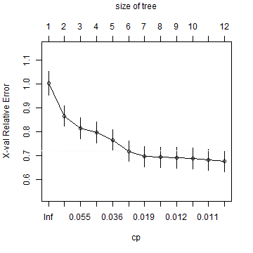
#
# fit the regression tree with the best cp value
yield.model.opt = rpart(Yield ~ ., data=train_data_tree, cp=0.015)
# plot the regression tree
rpart.plot(yield.model.opt, type=2, extra="auto", round=0, under=T, box.palette="BlGnYl")
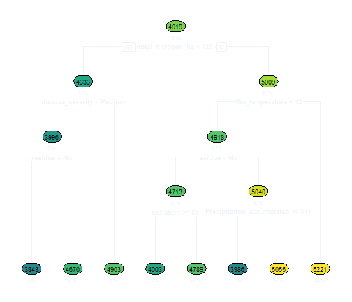
Step 6: Global interpretation¶
Model agnostic interpretation techniques can be used to interpret the tuned random forest model fitted in the previous section. Several techniques can be used for this purpose such as partial dependency plots, two-way interactions, and surrogate models, as demonstrated below.
Variable importance¶
The most common model interpretation technique is to visualize the variable importance plot. This plot indicates the most important variable governing yield variability, as shuffling that variable leads to considerable changes in model performance. In our data set, the most important variables are nitrogen applied and number of irrigations. Please refer to the code below to compute the variable importance plot.
# select xy variables
X <- train_data[which(names(train_data) != "cc_yield")]
y <- train_data$cc_yield
#
# check variable importance based on model rmse
model_imp <- Predictor$new(rf_model_final, data=X, y=train_data$cc_yield)
imp_rf <- FeatureImp$new(model_imp, loss="rmse")
plot(imp_rf)
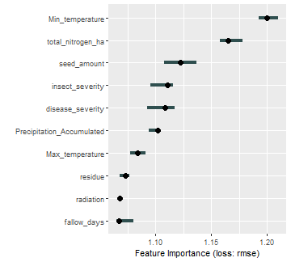
Partial dependency plots¶
Partial dependency plots for single variables are also commonly used for the interpreation of machine learning models. The interpretation of, what are the variable responsible for low yield vs high yield gives a direction how to brings the farmers from low yielding group to high yield.
# example partial dependency plot for nitrogen applied
pdp_totN <-
FeatureEffect$new(model_imp, feature=c("total_nitrogen_ha"), method="pdp") %>% plot() +
ggtitle("PDP of Total N applied")
pdp_totN
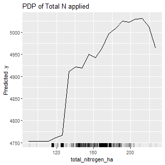
Two-way interactions¶
Another way to interpret the model is to visualize the impact of two-way interactions between important variables on crop yield. First we check interactions between a categorical and a continuous variable. Second we check the interaction between two continuous variables. This is done with the chunk of code below.
# overall two-way interaction strength
ia <- Interaction$new(model_imp)
#
# interaction between production practices
ia_disease_severity <- Interaction$new(model_imp,feature="insect_severity") # changed from disease severity...
#
# continuous x categorical variable
pdp_dis_N <-
FeatureEffect$new(model_imp, c("insect_severity", "total_nitrogen_ha"), method="pdp") %>% plot() +
ggtitle("Disease incidence x N applied")
pdp_dis_N
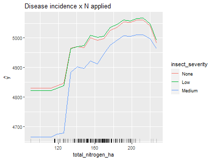
#
# continuous x continuous variable
pdp_N_temp <-
FeatureEffect$new(model_imp, c("total_nitrogen_ha", "Min_temperature"), method="pdp") %>% plot() +
ggtitle("N applied x Minimum temperature")
pdp_N_temp
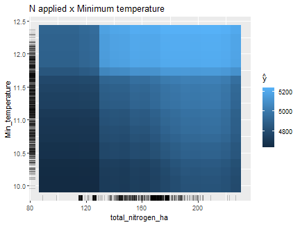
Surrogate model¶
Finally, boxplots can be produced to visualize the yield variability for the most important ‘conditions’ captured by the regression tree representing random forest model fitted. This can be visualized with the chunk of code below.
surrigate_tree <- TreeSurrogate$new(model_imp)
plot(surrigate_tree)
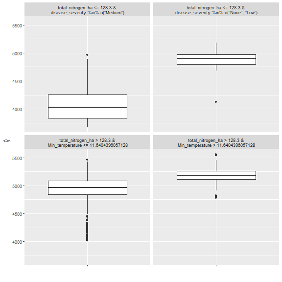
Step 7: Local interpretation¶
The above model interpretation relied on a single global interpretation using all the data, i.e., total N applied is important to explain on-farm wheat variability in the study region, followed by the number of irrigations and other factors. Yet, a single variable may not be equally important for all individual farms. Also, the extent to which a factor of production affects crop yield varies across the population, i.e., N applied may be more important for some fields and not that important for other fields. Local model interpretation techniques can thus help identifying find which variables are most important for specific subsets of the data. There are numerous techniques available for local model interpretation, one of which is illustrated in the chunk of code below.
# fit model with local importance
yield_model_localImp <- ranger::ranger(cc_yield ~ ., data=train_data, importance='permutation', local.importance=T, scale.permutation.importance=T, mtry=3)
#
# transform to data frame and print summary
local_imp <- data.frame(yield_model_localImp$variable.importance.local)
#
# global importance data of each variable
global_imp <- data.frame(ranger::importance(yield_model_localImp))
global_imp
## ranger..importance.yield_model_localImp.
## Min_temperature 115487.44
## residue 74745.05
## total_nitrogen_ha 65529.60
## Precipitation_Accumulated 82812.65
## seed_amount 46300.81
## Max_temperature 72325.22
## disease_severity 41882.88
## radiation 67767.79
## insect_severity 38022.74
## fallow_days 43972.72
The chunk of code below is used to visualize how the local importance changes across a range of inputs use. These results are compared with the global importance seen above, as they both have the same unit.
plot(train_data$total_nitrogen_ha, yield_model_localImp$variable.importance.local[,"total_nitrogen_ha"], xlab="Nitrogen applied", ylab="Importance of Nitrogen", pch = 20)
abline(h=ranger::importance(yield_model_localImp)["total_nitrogen_ha"], col='red')
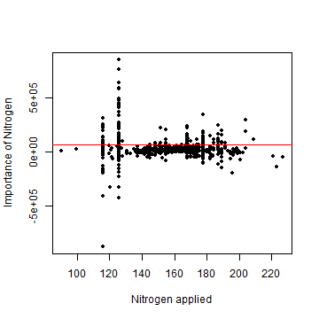
Step 8: Shapely values¶
The most important feature for yield gap decomposition is the estimation of shapely values from a tuned random forest model. The Shapely additive explanation technique ranks individual variables and identifies the yield contribution of each variable as deviations from mean predicted yield by the model. More information about Shapely values can be found here. More recently, Shapely values have been applied to machine learning models to estimate the contribution of individual variables to the final model prediction. Thus, Shapely values indicate the marginal contribution of each predictor to the final yield prediction as compared to a baseline prediction. Shapely values can be estimated using the chunk of code below.
# used model prediction
X <- train_data[which(names(train_data) != "cc_yield")]
y <- train_data$cc_yield
model_imp <- Predictor$new(rf_model_final, data=X, y=train_data$cc_yield)
#
# get shapely values
shap.explain <- iml::Shapley$new(model_imp, x.interest=X[1,])
plot(shap.explain)
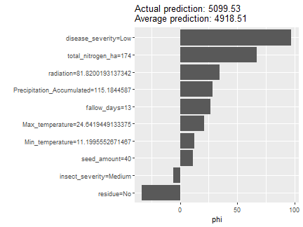
The chunk of code below finds the minimum observed yield and describes with Shapely the cause of that minimum yield. This can be generalized to any field, for which row indices need to be modified.
ix.minyld <- which.min(y)
shap.explain.minyld <- iml::Shapley$new(model_imp, x.interest=X[ix.minyld,])
plot(shap.explain.minyld)
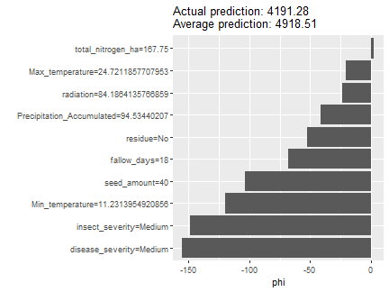
Recommendations¶
Keep calm and let the machine learn =)